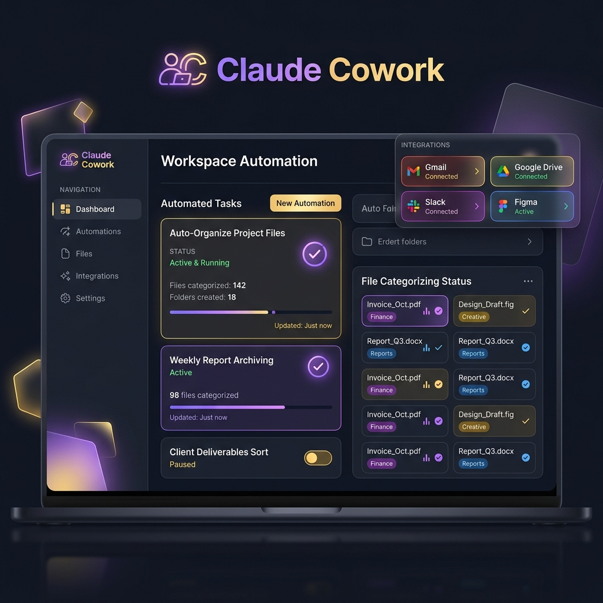
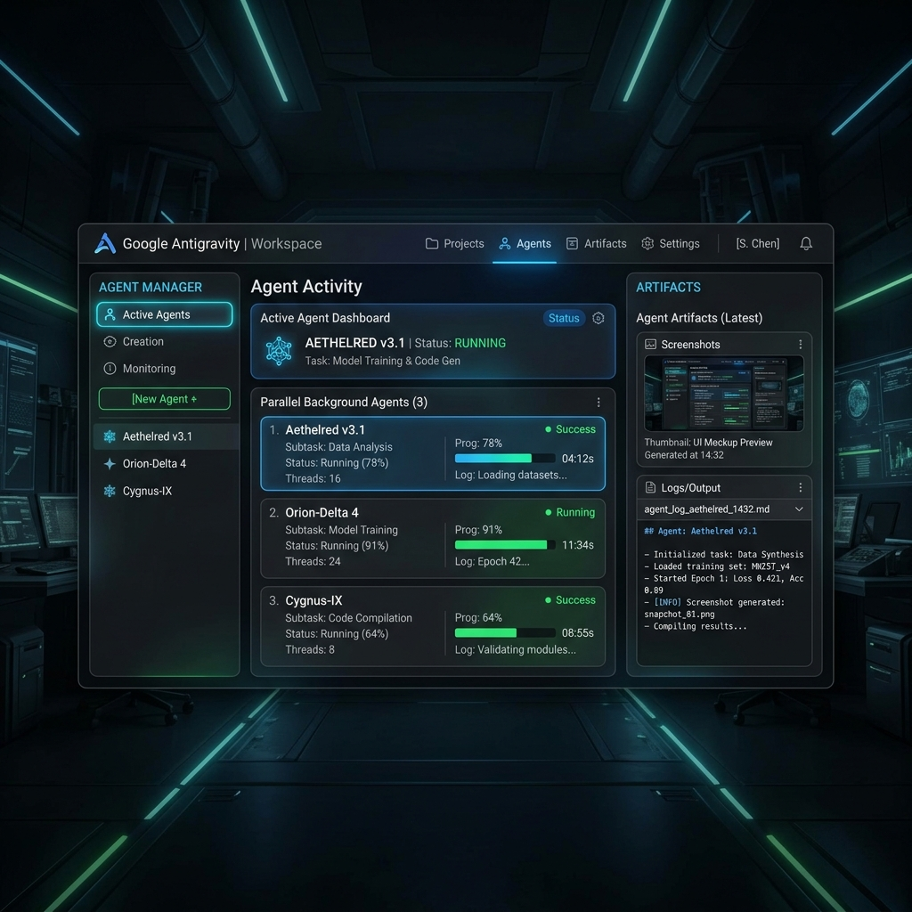

Xây dựng agents automation
Từ "AI trả lời câu hỏi" đến "AI tự làm việc thay bạn": hiểu agent, tools, MCP và cách dựng những trợ lý tự động hóa đầu tiên với Claude, Antigravity và AI Studio.
1Agent là gì? Khác chatbot ra sao?
Một chatbot trả lời câu hỏi rồi dừng. Một agent (tác tử AI) thì tự lên kế hoạch, hành động qua nhiều bước, dùng công cụ, kiểm tra kết quả và lặp lại cho đến khi hoàn thành mục tiêu bạn giao.
💬 Chatbot
Bạn hỏi: "Tóm tắt email hôm nay." → Nó trả lời nếu bạn đã dán email vào. Nó không tự mở hộp thư.
🤖 Agent
Bạn giao: "Mỗi sáng đọc hộp thư của tôi, tóm tắt các email quan trọng và lưu vào một file." → Agent tự mở Gmail, đọc, lọc, viết file — không cần bạn dán gì cả.
Vòng lặp của một agent (rất quan trọng): Nghĩ (lập kế hoạch) → Hành động (gọi một công cụ) → Quan sát (xem kết quả) → lặp lại cho đến khi xong. Đây là điều khiến agent "tự chủ" hơn chatbot.
2Cấu tạo của một agent
Dù xây bằng công cụ nào, một agent thường gồm bốn thành phần. Hiểu bốn thứ này là bạn hiểu mọi nền tảng.
| Thành phần | Vai trò | Ví dụ đời thường |
|---|---|---|
| Bộ não (model) | Suy luận, lập kế hoạch, quyết định bước tiếp theo. | Claude Opus, Gemini 3 Pro. |
| Hướng dẫn (instructions) | Mô tả mục tiêu, nguyên tắc, giới hạn của agent. | "Bạn là trợ lý sắp xếp file, luôn hỏi trước khi xóa." |
| Công cụ (tools) | Những hành động agent được phép làm. | Đọc file, gửi email, mở trình duyệt. |
| Bộ nhớ (memory/context) | Lưu thông tin để không "quên" giữa các bước. | Ghi nhớ bạn thích báo cáo dạng bảng. |
3Tools — "đôi tay" của agent
Nếu model là bộ não thì tools (công cụ) là đôi tay. Không có tools, agent chỉ biết nói. Có tools, agent mới làm được việc trong thế giới thật. Một số tools phổ biến:
- Đọc/ghi file: mở tài liệu, tạo báo cáo, sắp xếp thư mục trên máy bạn.
- Chạy lệnh / chạy code: thực thi tính toán, xử lý dữ liệu, kiểm thử phần mềm.
- Duyệt web: mở trang, đọc nội dung, điền biểu mẫu, chụp ảnh màn hình.
- Kết nối ứng dụng: Gmail, Google Drive, Slack, Notion, lịch… (qua MCP/Connectors).
Nguyên tắc quyền tối thiểu: Chỉ cấp cho agent đúng những công cụ nó cần cho việc đó. Một agent viết báo cáo không cần quyền xóa file. Càng ít quyền, càng an toàn.
4MCP & Connectors — cổng kết nối ra thế giới
MCP (Model Context Protocol) là một chuẩn kết nối chung do Anthropic giới thiệu, giúp agent dùng được công cụ và dữ liệu bên ngoài một cách thống nhất. Hãy hình dung MCP như cổng USB-C của thế giới AI: thay vì mỗi ứng dụng một kiểu cắm, giờ có một chuẩn duy nhất để cắm mọi thứ vào agent.
MCP server vs Connector: "MCP server" là phần mềm cung cấp một bộ công cụ (ví dụ: bộ công cụ thao tác với Gmail). "Connector" thường là cách gọi thân thiện cho các kết nối sẵn có mà bạn chỉ cần bấm "bật". Claude hiện kết nối được với hơn 50 công cụ qua connectors (Slack, Gmail, Google Drive, Notion…).
Vì sao MCP quan trọng với người mới?
Trước MCP, để agent nói chuyện với Gmail bạn phải tự viết code kết nối phức tạp. Với MCP, bạn chỉ cần "cắm" một MCP server có sẵn là agent dùng được ngay. Hệ sinh thái MCP đang phát triển nhanh: có cả một registry (kho) các MCP server để bạn tìm và bật theo nhu cầu.
5Xây agent với Claude
Claude (của Anthropic) cung cấp nhiều cách xây agent, từ dễ đến chuyên sâu. Người mới nên bắt đầu với Claude Cowork.
① Claude Cowork — dễ nhất cho người không lập trình
Claude Cowork là một trợ lý AI chạy trên máy tính của bạn (macOS & Windows). Bạn giao một mục tiêu, Cowork tự làm việc với file, ứng dụng và trình duyệt để trả về kết quả hoàn chỉnh. Cowork đã phát hành chính thức (rời khỏi giai đoạn xem trước) từ tháng 4/2026.

Xem giao diện thật: Trang sản phẩm chính thức Claude Cowork có video demo giao diện thực tế; hướng dẫn cài đặt & sử dụng ở Claude Help Center.
Những việc Cowork làm tốt cho người mới:
- Dọn dẹp file: "Sắp xếp thư mục Downloads của tôi theo loại, xóa thứ cũ hơn 30 ngày."
- Báo cáo định kỳ: "Xử lý các ảnh hóa đơn trong thư mục /receipts, tạo bảng tính phân loại chi tiêu."
- Chuẩn bị họp: "Xem lịch ngày mai và soạn tài liệu tóm tắt cho từng cuộc họp."
- Quy trình liên ứng dụng: phân tích dữ liệu trong Excel rồi tự dựng slide PowerPoint từ kết quả đó.
Skills & Plugins: Cowork có "thư viện kỹ năng" (Skills Directory) với hơn 1.000 skill dựng sẵn — sao chép vào là dùng được, từ tổ chức file đến viết email, làm báo cáo tuần. Plugins là gói lớn hơn, đóng gói nhiều skill + connector + lệnh tắt + sub-agent cho một công việc cụ thể. Đây chính là cơ chế tài liệu này được tạo ra (qua các skill như tạo HTML/báo cáo).
② Claude Code — cho ai muốn đi sâu hơn
Claude Code là công cụ dòng lệnh để lập trình cùng Claude, đã tiến hóa thành một "tầng điều phối" (orchestration layer) cho cả đội agent. Bốn khái niệm chính:
| Khái niệm | Ý nghĩa |
|---|---|
| Subagents | Các "trợ lý con" chuyên biệt (review code, chạy test, kiểm bảo mật), mỗi cái có bộ nhớ và quyền riêng. Một agent chính điều phối chúng. |
| MCP | Kết nối Claude Code với hệ thống ngoài: cơ sở dữ liệu, trình theo dõi lỗi, công cụ thiết kế, trình duyệt… |
| Hooks | Quy tắc tự động kích hoạt theo sự kiện: chạy test trước khi dừng, chặn sửa file tự sinh, lint trước khi commit. |
| Skills & Plugins | Đóng gói hướng dẫn, công cụ và quy trình để tái sử dụng và chia sẻ. |
③ Claude Agent SDK — cho lập trình viên xây agent riêng
Khi bạn muốn nhúng một agent vào sản phẩm của mình, Claude Agent SDK cung cấp bộ công cụ lập trình để tự xây dựng agent với vòng lặp nghĩ–hành động–quan sát, quản lý công cụ và bộ nhớ. Phần này dành cho người đã quen lập trình; người mới có thể bỏ qua lúc đầu.
6Xây agent với Google Antigravity
Google Antigravity (ra mắt 20/11/2025) là một nền tảng phát triển agentic — không chỉ là trình soạn code mà là cả "phòng làm việc" nơi bạn giao việc cho các agent tự lên kế hoạch, viết code, chạy thử trên trình duyệt và báo cáo lại. Nó hoạt động trên macOS, Windows, Linux và miễn phí trong giai đoạn xem trước.


Ảnh: Google Developers Blog. Cần kết nối internet để hiển thị ảnh này.
Hai chế độ làm việc
✍️ Editor View
Giao diện soạn code quen thuộc có AI hỗ trợ (gợi ý gõ, lệnh inline). Dùng khi bạn muốn trực tiếp tham gia, làm việc đồng bộ với AI.
🎛️ Manager Surface
"Bảng điều khiển" để bạn khởi tạo, điều phối và quan sát nhiều agent chạy song song trên các workspace khác nhau — kể cả khi bạn đang làm việc khác.
Artifacts — "bằng chứng công việc" thay vì log khó hiểu
Điểm hay nhất của Antigravity cho người mới: thay vì bắt bạn đọc nhật ký kỹ thuật rối rắm, agent tạo ra Artifacts — những sản phẩm dễ hiểu như danh sách việc, kế hoạch thực hiện, ảnh chụp màn hình, video ghi lại thao tác trên trình duyệt. Bạn liếc qua là biết agent làm gì. Nếu thấy sai, bạn để lại nhận xét ngay trên Artifact (như comment vào tài liệu) và agent tự tiếp thu mà không cần dừng lại.
Tự kiểm thử trên trình duyệt: Antigravity cài một tiện ích Chrome riêng cho agent, cho phép nó tự mở cửa sổ, cuộn, gõ, bấm và đọc log. Nhờ vậy agent có thể tự kiểm tra tính năng vừa viết có chạy đúng không — một việc trước đây phải làm thủ công.
Lựa chọn model
Antigravity cho chọn nhiều "bộ não": Gemini 3 Pro (với hạn mức rộng rãi), và hỗ trợ đầy đủ Anthropic Claude Sonnet 4.5 cùng OpenAI GPT-OSS. Bạn có thể chọn model phù hợp cho từng tác vụ ngay trong cùng một công cụ.
Bắt đầu với Antigravity (3 bước)
- Tải về & cài đặt Vào
antigravity.google/download, chọn hệ điều hành (macOS/Windows/Linux), cài như một ứng dụng thông thường. Đăng nhập bằng tài khoản Google. - Mô tả việc cần làm Trong Manager Surface, giao một nhiệm vụ end-to-end, ví dụ: "Tạo trang web danh sách việc cần làm, tự chạy thử và chụp màn hình cho tôi xem."
- Duyệt Artifacts & phản hồi Xem kế hoạch và ảnh chụp agent tạo ra. Để lại nhận xét nếu cần chỉnh. Agent tiếp tục cho đến khi đạt yêu cầu.
7Tự động hóa với Google AI Studio
Google AI Studio nghiêng về tạo nhanh ứng dụng hơn là agent chạy nền, nhưng vẫn rất hữu ích trong bức tranh tự động hóa. Ở chế độ Build mode, bạn mô tả ý tưởng, AI Studio dựng ra app web (hoặc cả app Android), và bạn có thể thêm tính năng AI qua "AI Chips" — ví dụ tạo ảnh, dùng dữ liệu Google Maps.
- Tạo app từ lời nói: mô tả bằng tiếng Việt/Anh, AI Studio sinh ra ứng dụng chạy được ngay trong trình duyệt.
- App Android thật: sinh ứng dụng Android native (Kotlin + Jetpack Compose), xem trước bằng máy ảo Android ngay trong trình duyệt, không cần điện thoại thật.
- Triển khai một nút bấm: deploy lên Cloud Run, dùng dịch vụ Firebase, hoặc xuất code dạng ZIP / đẩy lên GitHub để mang sang công cụ khác.
Mẹo kết hợp: Dùng AI Studio để dựng nhanh bản mẫu, rồi xuất code và mở trong Antigravity để các agent hoàn thiện, kiểm thử và bảo trì. Xem chi tiết ở trang So sánh & tích hợp.
8Chạy theo lịch & chạy nền
Sức mạnh thật của automation là việc tự chạy mà không cần bạn ngồi đó. Hai dạng phổ biến:
| Dạng | Mô tả | Ví dụ |
|---|---|---|
| Theo lịch (scheduled) | Chạy lặp lại vào thời điểm định sẵn. | "Mỗi 6h sáng tổng hợp tin tức AI và gửi email cho tôi." |
| Chạy nền (background) | Giao một việc dài, agent tự làm trong khi bạn làm việc khác. | "Tái hiện lỗi này, viết test và sửa, xong báo tôi." (Antigravity Manager) |
Claude Cowork cho phép đặt lịch chạy tác vụ tự động (ví dụ dọn file mỗi thứ Sáu, báo cáo chi tiêu hàng tuần). Antigravity cho phép điều phối nhiều agent chạy nền qua Manager Surface. Bạn sẽ làm một ví dụ "bản tin tự động theo lịch" ở trang Dự án thực hành.
9An toàn khi cho agent hành động
Agent càng tự chủ thì càng cần "lan can an toàn". Đây là những nguyên tắc tối thiểu:
👀 Yêu cầu duyệt trước hành động nguy hiểm
Cấu hình để agent hỏi bạn trước khi xóa file, gửi email ra ngoài, hay chi tiền.
🔐 Quyền tối thiểu
Chỉ cấp công cụ và thư mục thật sự cần thiết cho nhiệm vụ.
🧪 Thử trên dữ liệu giả trước
Chạy thử với thư mục/tài khoản thử nghiệm trước khi cho động vào dữ liệu thật.
📋 Xem lại "bằng chứng"
Đọc Artifacts/log để hiểu agent đã làm gì, nhất là trong vài lần chạy đầu.
Tuyệt đối không tự động hóa việc chuyển tiền/giao dịch tài chính. Với các thao tác đặt lệnh, chuyển khoản, thanh toán — hãy luôn để chính bạn bấm nút cuối cùng, không giao toàn quyền cho agent.